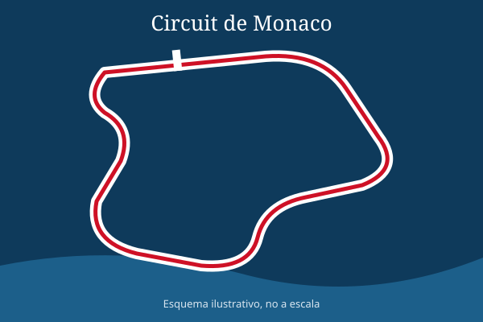

El trazado de Montecarlo
El Circuit de Monaco recorre las calles de Montecarlo y La Condamine. Tiene 19 curvas y una pista tan estrecha que los monoplazas pasan a pocos centímetros de los guardarraíles.

Puntos famosos del recorrido
En orden de recorrido desde la salida, estos son algunos de los lugares más conocidos:
- Sainte Dévote: primera curva, escenario de muchos accidentes en la salida.
- Casino: curva ante el famoso edificio de Montecarlo.
- Mirabeau: bajada muy cerrada hacia la horquilla.
- Horquilla del Grand Hôtel: la curva más lenta de todo el calendario.
- Túnel: tramo cubierto donde cambia la luz de forma brusca.
- Piscina y Rascasse: zona del puerto antes de volver a meta.
Comparativa con otros circuitos
| Circuito | Longitud (km) | Vueltas | Tipo |
|---|---|---|---|
| Mónaco | 3,337 | 78 | Urbano |
| Montmeló (Barcelona) | 4,657 | 66 | Permanente |
| Spa-Francorchamps | 7,004 | 44 | Permanente |